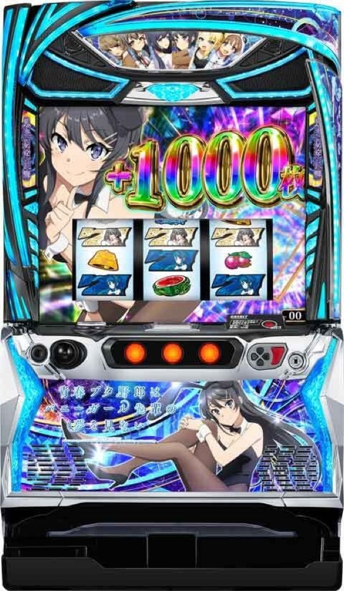

L青春ブタ野郎はバニーガール先輩の夢を見ない
完走型STを重ね、夢現JUDGEMENTを突破する。
- 導入
- 2026年9月
- メーカー
- オリンピア
- 分類
- パチスロ
主要スペック
疑似ボーナス後も残りゲーム数を消化できる完走型STが特徴。上位CZ『夢現JUDGEMENT』から上位STを目指す流れを簡易体験できます。
- 実機の抽選対象は設定2〜6（設定1非搭載）
- ボーナス初当りは設定2約1/350.8〜設定6約1/207.8
- 約31.5G/50枚・コイン単価約4.1円（設定2）
L青春ブタ野郎はバニーガール先輩の夢を見ないの見どころと計算条件
疑似ボーナス後も残りゲーム数を消化できる完走型STが特徴。上位CZ『夢現JUDGEMENT』から上位STを目指す流れを簡易体験できます。
スマスロ 青ブタを数字で早分かり
初当りボーナスから青ブタJUDGE、青春ブタ野郎は∞の夢を見るまでの流れと、設定ごとの結果差を固定レートで比較できます。
設定2〜6を実機どおり抽選
設定1は搭載されていないため、START時は設定2・3・4・5・6から均等に抽選します。設定Lは遊技用ではないため対象外です。
設定別の青春BONUS初当りと出玉率を使い、結果とランキングに今回の設定を表示します。
公開値と簡易演出
- 設定2は初当り約1/350.8
- 設定6は初当り約1/207.8
- 夢現JUDGEMENT以降は共通の簡易抽選
- 19,000枚到達時はコンプリート表示
平均Gと投資目安の計算
掲載する青ブタJUDGE初当り約1/350.8は設定2基準です。当サイトでは50枚あたり31.5G、1,000円46枚貸しの固定条件から、設定2基準の平均投資目安を約12,100円と計算します。
シミュレーターでは設定2・3・4・5・6を均等抽選します。設定2・3・4・5・6で公開されている初当り値を個別に使います。公開されていない特化ゾーン・上位到達率の設定差は加えません。 換金は5.2枚交換で固定し、結果とランキングに設定を表示します。
シミュレーション結果の見方
当るまで初当りボーナス・青ブタJUDGEまでのゲーム数
設定設定2・3・4・5・6から抽選された今回の設定
上位到達夢現JUDGEMENTと青春ブタ野郎は∞の夢を見るへの到達
最終収支差枚と5.2枚交換の収支目安
結果は自動で「マイ記録」に保存され、同じ機種を何回試したか、最高収支、勝率をあとから確認できます。
簡易シミュレーターについて
初当りボーナス・青ブタJUDGE・青春ブタ野郎は∞の夢を見るの流れを固定条件で体験できます。JavaScriptを有効にすると、この位置にシミュレーター、演出、マイ記録、機種別ランキングが表示されます。
結果は娯楽・確率理解のための参考表示です。金銭的価値や交換価値はなく、実際の勝敗や収支を保証しません。18歳未満の方の利用はお控えください。
スマスロ 青ブタのよくある質問
スマスロ 青ブタはどんな台？
疑似ボーナス後も残りゲーム数を消化できる完走型STが特徴。 実機の抽選対象は設定2〜6（設定1非搭載）が主な確認ポイントです。
スマスロ 青ブタの平均投資目安は？
設定2基準の青ブタJUDGE初当り約1/350.8と、50枚あたり31.5G・46枚貸しの固定条件から、平均12,100円を目安として表示します。実際の設定や遊技状況で結果は変わります。
設定とゲームの流れはどう抽選する？
開始時に設定2・3・4・5・6から1つを均等抽選し、初当りボーナス、青ブタJUDGE、夢現JUDGEMENT、青春ブタ野郎は∞の夢を見るの順で到達を判定します。設定は最終結果とランキングに表示します。
収支はどう計算する？
1,000円46枚貸し・5.2枚交換の固定条件で投資、換金、収支目安を計算します。実店舗の再プレイ、持ちメダル、端数処理は含みません。